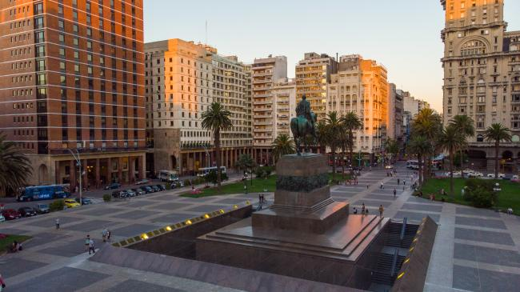

MONTEVIDEO
Montevideo, la capital de Uruguay, es una importante ciudad de la Bahía de Montevideo. Se ubica en torno a la Plaza de la Independencia, donde alguna vez hubo una ciudadela española. La plaza se conecta con la Ciudad Vieja, con edificios art deco, casas coloniales y lugares emblemáticos como el altísimo Palacio Salvo y el Teatro Solís neoclásico. El antiguo Mercado del Puerto está lleno de restaurantes para degustar carnes.

Andrea: Casa Rivera es una construcción histórica de la Ciudad Vieja que ahora exhibe arte y muebles de la época colonial. Avenida 18 de Julio, la principal avenida comercial de Montevideo, va del centro de la ciudad hasta el Obelisco de Montevideo, de 40 m de altura. En el camino hay atracciones como el Museo del Gaucho, que cuenta la historia de los vaqueros tradicionales de Uruguay. A lo largo de la costa de la ciudad están la Playa de los Pocitos y La Rambla, un paseo rodeado de parques. El frondoso Parque Batlle alberga el Estadio Centenario de fútbol, sede de la Copa del Mundo de 1930.
La Plaza Independencia es la plaza más importante de la ciudad de Montevideo, en Uruguay, se ubica en el centro de la ciudad, en el espacio que ocupaba la Ciudadela de Montevideo. Alberga en su centro el monumento y mausoleo al Gral. José Gervasio Artigas.
El Palacio Salvo es un edificio emblemático de la ciudad de Montevideo. Fue edificado al impulso de los hermanos empresarios Ángel, José y Lorenzo Salvo y diseñado por el arquitecto italiano Mario Palanti e inaugurado el 12 de octubre de 1928.
Pocitos es un barrio de la ciudad de Montevideo, capital de Uruguay. Limita con los barrios Buceo, La Mondiola, Parque Batlle, Villa Dolores. Tres Cruces, Cordón y Punta Carretas.

Punta del Este es un balneario que se encuentra en una angosta península del sudeste de Uruguay. La popular playa Brava es conocida por su fuerte oleaje y por "La mano", una escultura gigante de 5 dedos. En la costa oeste, la playa Mansa tiene aguas tranquilas y poco profundas. En la Plaza Artigas, cerca de las exclusivas tiendas de Avenida Gorlero, se venden artesanías locales. El faro del siglo XIX en la punta sur de la península tiene una plataforma de observación.
El Mercado del Puerto es un paseo gastronómico y cultural de la República Oriental del Uruguay.